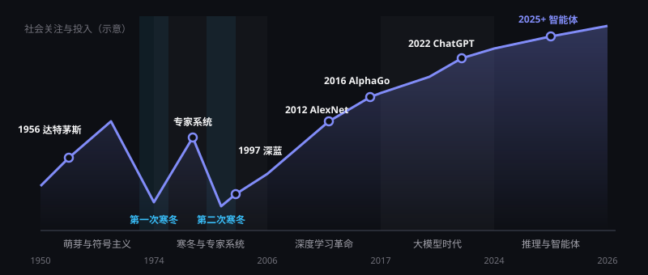

发展里程碑：AI 的五个时代
人工智能走过了七十余年，经历过两次"寒冬"，也迎来了深度学习与大模型的爆发。按技术范式，可以把这段历史分为五个阶段。
一条曲线看懂 AI 七十年
AI 的发展从来不是一条直线。期望过高、能力不足，曾两次让整个领域陷入"寒冬"；而每一次复苏，都源于算力、数据或算法上的关键突破。

早期研究者乐观地预言"十年内机器就能像人一样思考"，但当时的计算机算力极其有限，规则系统也无法应对真实世界的复杂性。承诺落空后，政府与企业大幅削减投入。
GPU 让神经网络的训练速度提升了数十倍，互联网积累了海量数据，反向传播等算法日益成熟。三者在 2012 年前后同时就位，深度学习一举突破。
与以往不同，如今 AI 已产生大规模真实收入：88% 的企业组织在使用 AI，生成式 AI 三年内普及到 53% 的人口。但"能力参差不齐"仍提醒我们保持理性预期。
关键节点详解
按时间顺序梳理五个阶段中最具代表性的里程碑事件。
图灵提出"模仿游戏"
图灵发表《计算机器与智能》，提出用"图灵测试"判断机器能否思考，奠定了 AI 的哲学起点。
达特茅斯会议
麦卡锡、明斯基、香农等人在达特茅斯学院召开研讨会，"人工智能"一词正式诞生。
ELIZA 聊天程序
MIT 的 ELIZA 通过简单的模式匹配模拟心理咨询师对话，是最早的聊天机器人之一。
两次 AI 寒冬
早期承诺远超实际能力，研究经费大幅削减；专家系统一度在商业上取得成功，但维护成本高、难以扩展。
反向传播算法普及
鲁梅尔哈特、辛顿等人系统阐述反向传播，使多层神经网络的训练成为可能。
深蓝战胜卡斯帕罗夫
IBM 深蓝击败国际象棋世界冠军，展示了专用搜索算法与强大算力的威力。
"深度学习"复兴
辛顿等人提出深度信念网络的逐层训练方法，神经网络研究重新受到重视。
AlexNet 引爆计算机视觉
基于 GPU 训练的卷积神经网络在 ImageNet 竞赛中大幅领先，深度学习进入黄金时代。
生成对抗网络（GAN）
古德费洛提出 GAN，让 AI 第一次能生成逼真的图像，开启了生成式模型研究热潮。
AlphaGo 战胜李世石
DeepMind 结合深度学习与强化学习，在被认为最难的棋类游戏围棋上击败人类顶尖棋手。
Transformer 架构
谷歌论文《Attention Is All You Need》提出基于注意力机制的 Transformer，成为此后大模型的通用底座。
预训练范式确立
BERT、GPT 系列证明"海量数据预训练 + 下游微调"的有效性；2020 年 GPT-3 以 1750 亿参数展示出惊人的少样本学习能力。
AlphaFold 2 破解蛋白质结构预测
在 CASP14 评测中达到接近实验精度的水平，被视为 AI 推动基础科学的标志性突破。
生成式 AI 走向大众
Stable Diffusion 等文生图模型开源普及；11 月 ChatGPT 发布，两个月内成为史上增长最快的消费级应用之一。
多模态与"百模大战"
GPT-4 等多模态大模型发布，国内大模型密集涌现；我国《生成式人工智能服务管理暂行办法》施行。
推理模型、诺贝尔奖与监管落地
"先思考再回答"的推理模型出现；诺贝尔物理学奖授予神经网络奠基研究，化学奖授予蛋白质结构预测与设计；欧盟《人工智能法》生效。
开源推理与智能体元年
DeepSeek-R1 以低成本开源推理模型震动全球；编程与办公智能体普及；AI 在国际数学奥林匹克达到金牌水平；国务院印发"人工智能+"行动意见。
资本与政策同时加码
一季度全球创业融资约 3,000 亿美元，创单季纪录，AI 占绝大部分；3 月，政府工作报告首次提出"智能经济"，"十五五"规划纲要将人工智能列为前沿科技攻关重点。
开源再进一步，智能体有了规矩
DeepSeek V4 系列以开源方式发布；5 月，网信办等三部门印发《智能体规范应用与创新发展实施意见》，首次在国家层面对智能体作出定义与规范。
用户破 7 亿，机器人走向资本市场
上半年全球 AI 风险投资约 4,300 亿美元，超过 2025 年全年（安永口径）；我国生成式 AI 用户突破 7 亿；世界人工智能大会上智能体成为主角；宇树科技启动科创板 IPO；欧盟通过修订案推迟部分高风险 AI 义务。
新一代旗舰模型集中发布
OpenAI GPT-6、Anthropic Claude 5.5 系列、Google Gemini 4 预览版等新一代模型相继推出，竞争焦点从"聊天"转向能长时间自主工作的智能体。
历史给我们的三点启示
算力、数据、算法缺一不可
神经网络的思想在上世纪就已出现，直到 GPU 算力与互联网数据成熟，才真正释放潜力。
警惕过度承诺
两次寒冬都源于预期与现实的落差。今天的 AI 能力强大但并不均衡，理性评估才能持续投入。
通用方法终将胜出
依赖人工规则的方法往往被可随算力扩展的通用学习方法超越，这一规律在大模型时代再次得到验证。